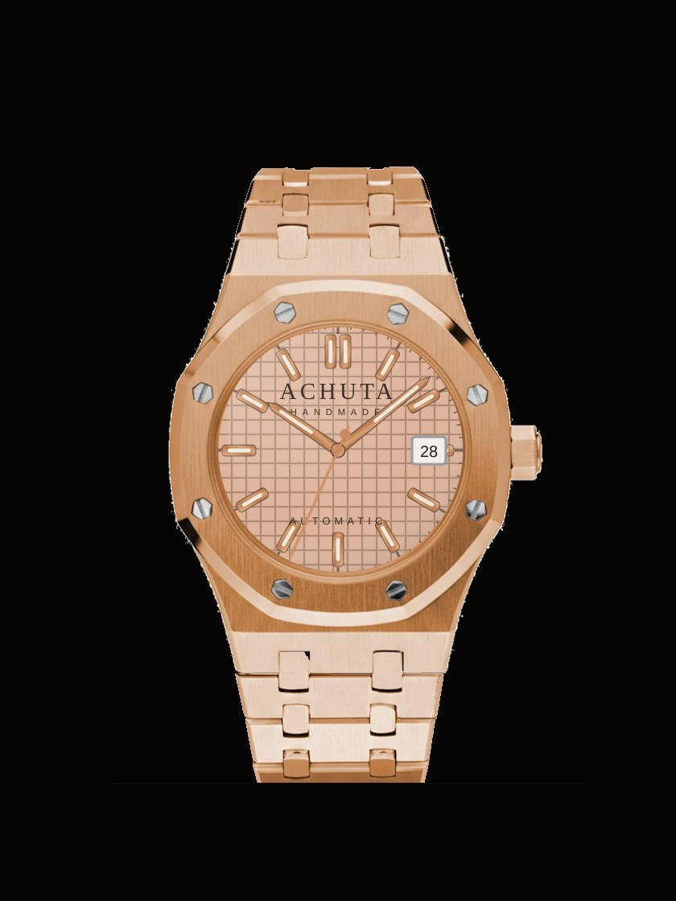

Load this buildRecent commissions
Built once,
for someone.
Every watch below was assembled to a client's build code. Load one into the configurator and make it yours — or make it your starting point.
Recent commissions
Every watch below was assembled to a client's build code. Load one into the configurator and make it yours — or make it your starting point.